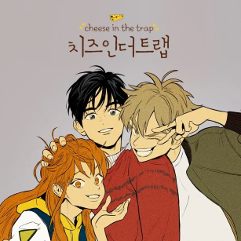
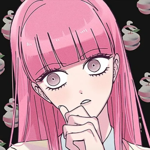
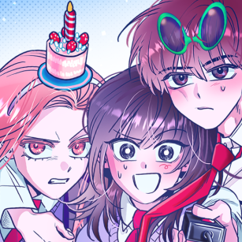

<별에서 온 그대> |
<힘쎈여자 도봉순> |
<질투의 화신> |
|---|---|---|
| 겨울만 되면 생각나서 정주행합니다... | 킬링타임용 B급 드라마 박보영이 세계관 최강자인 드라마입니다... |
그 유명한 조정석이 유방암 걸린 드라마... 싸우고사랑하고싸우고사랑하고 |
|  |  |  |
|---|---|---|
<치즈인더트랩> |
<썩은핑크의 법칙> |
<불청객과 함께 춤을> |
| 진짜 중에 진짜. 제가 봤던 무수히 많은 로맨스 중에 백인호가 제일 완벽한 서브남자라고 생각해요 |
본편도 좋았지만 외전을 더 추천!! 전달하고자 하는 메시지가 너무 아름다워요... |
사춘기, 질풍노도의 시기의 청춘...ㅎㅎ |